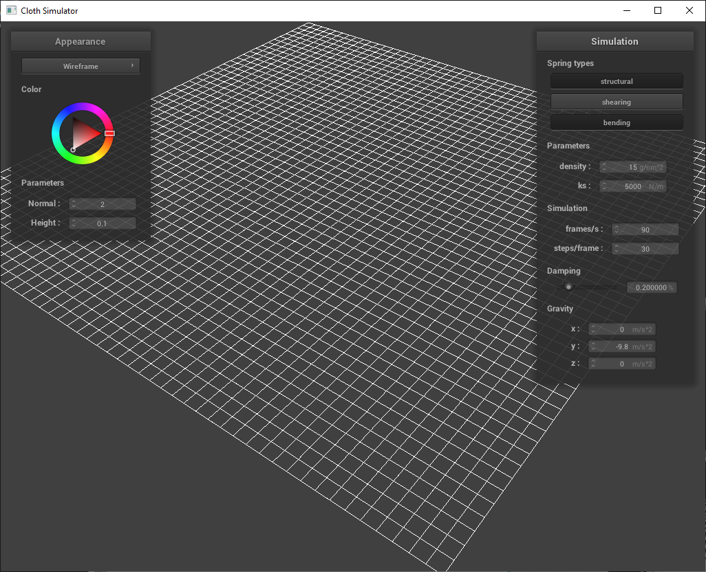
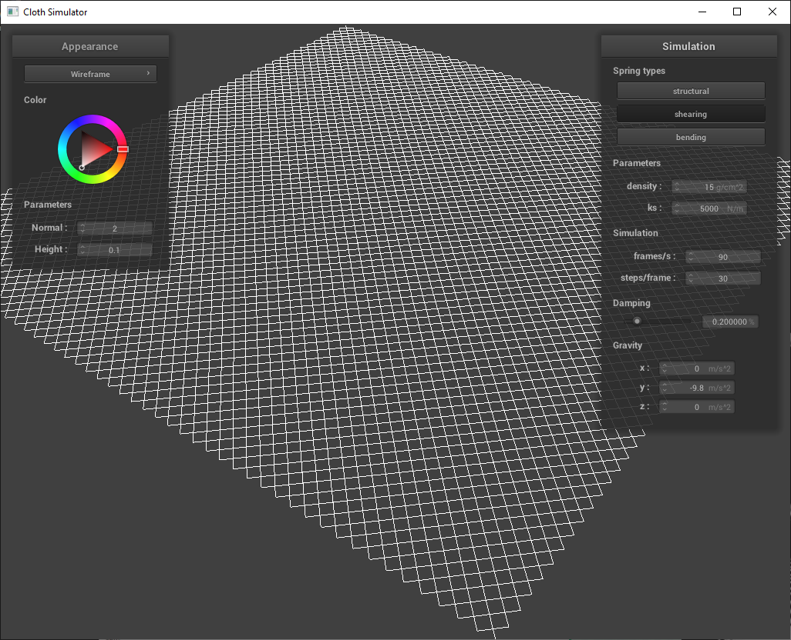
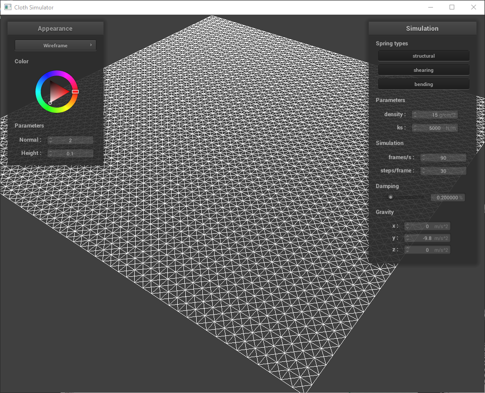
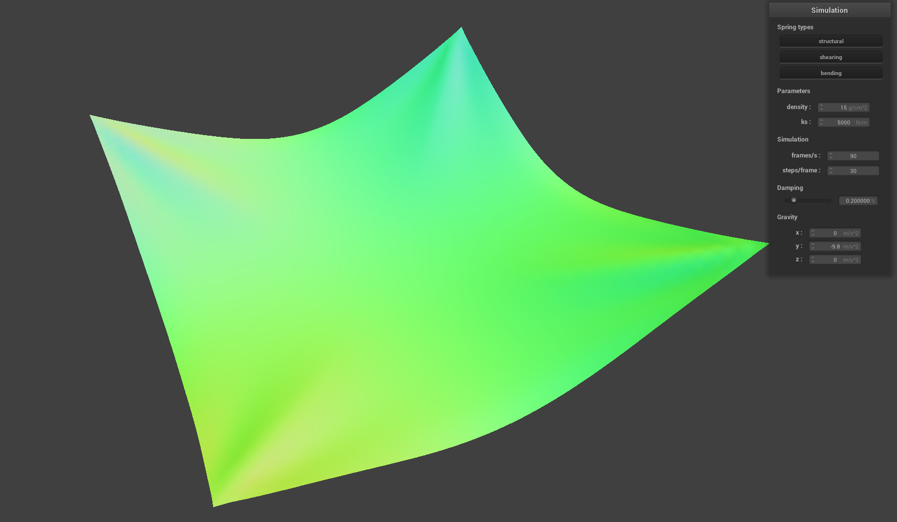
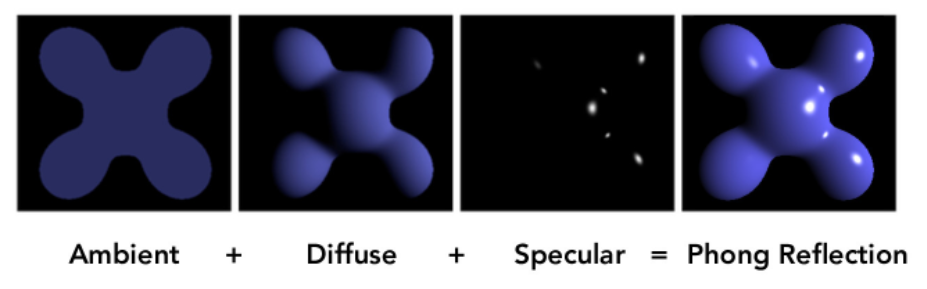

Project 4: ClothSim
CS 284a Computer graphics & Imaging
2022 Spring Kaleab Belete, Xinwei Zhuang Webpage: https://cal-cs184-student.github.io/sp22-project-webpages-xinwei-zhuang/proj4/index.htmlPart 1: Masses and springs
Reflection
Take some screenshots of scene/pinned2.json from a viewing angle where you can clearly see the cloth wireframe to show the structure of your point masses and springs. Show us what the wireframe looks like (1) without any shearing constraints, (2) with only shearing constraints, and (3) with all constraints.


Part 2: Simulation via numerical integration
Experiment with some the parameters in the simulation. To do so, pause the simulation at the start with P, modify the values of interest, and then resume by pressing P again. You can also restart the simulation at any time from the cloth's starting position by pressing R.- k_s With a small k_s, the cloth will have more foldings, there will be more ripples. With a large k_s, because the spring constant is large, the cloth will have less deformations.
- density With a small density, the cloth behaves with less ripples, and increase the density will leads to more deformations.
- dampling Though it barely shows in the final state image, but with a large dampling, simulation seems to be slow and takes a long time to reach the steady state. A small dampling rate will lead to a quicker simulation becuase we don't have that much of resistance.



Part 3: Handling collisions with other objects
Part 4: Handling self-collisions
Part 5: Shaders
- Explain in your own words what is a shader program and how vertex and fragment shaders work together to create lighting and material effects.
- Explain the Blinn-Phong shading model in your own words. Show a screenshot of your Blinn-Phong shader outputting only the ambient component, a screen shot only outputting the diffuse component, a screen shot only outputting the specular component, and one using the entire Blinn-Phong model.
- Show a screenshot of your texture mapping shader using your own custom texture by modifying the textures in /textures/.
- Show a screenshot of bump mapping on the cloth and on the sphere. Show a screenshot of displacement mapping on the sphere. Use the same texture for both renders. You can either provide your own texture or use one of the ones in the textures directory, BUT choose one that's not the default texture_2.png. Compare the two approaches and resulting renders in your own words. Compare how your the two shaders react to the sphere by changing the sphere mesh's coarseness by using -o 16 -a 16 and then -o 128 -a 128.
- Show a screenshot of your mirror shader on the cloth and on the sphere.
- Explain what you did in your custom shader, if you made one.
Shaders is isolated programs that run in parallel on GPU, executing sections of the graphics pieline. It takes an input (attribute), and output a 4-D vector. The pipeline is we use the output of the vvertex shader as the input of theh fragment shader.
The vertex shader intakes vertices, and modifies the geometric properties such as position and normal vectors, using final positions to write varying (transformed positions, normals, uv coordinates) to use in the fragment shader. The gragment shader intakes geometric attributes of the fragment, and compute the color.
The Blinn-Phong reflection model is a efficient way to approximate lighting. We break down specular reflection into ambient, diffuse and specular shader. In this project, we add ambient light and specular reflection to the diffuse lighting to render materials with reflective property. The equation for calculating Blinn-Phong reflection is $$L=k_a I_a + k_d (\frac{I}{r^2}) max (0, n\cdot l) + k_s (\frac{I}{r^2})max (0, n\cdot h)^p$$ where the first term is the ambient shader, the second is the diffuse shader, and the last is the specular shader. A visual separation illustration is shown below.
